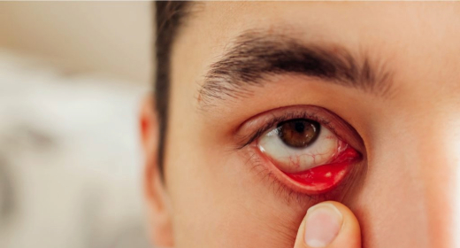

فتح الغدد الدهنية المسدودة في الجفون لاستعادة طبقة دموع صحية وتخفيف جفاف العين المزمن والحبيبات والحرقة.

غدد دهنية مسدودة على حافة الجفنالغدد الدهنية (غدد ميبوميوس) غدد زيتية صغيرة على حواف الجفون، يشكّل زيتها الطبقة العليا من الدموع ويمنعها من الجفاف بسرعة.
في خلل هذه الغدد تنسدّ الغدد أو تفرز زيتاً كثيفاً، فتتبخّر الدموع بسرعة وتصبح العينان جافتين حمراوين متهيّجتين، وهو من أكثر أسباب جفاف العين شيوعاً.
يبدأ العلاج بالكمادات الدافئة وتنظيف الجفون، وعندما تبقى الغدد مسدودة يفتحها التسليك مباشرةً ليتدفّق الزيت مجدداً.
لمحة سريعة
يسبّب خلل الغدد الدهنية عادةً:
خاصةً في نهاية اليوم.
دموع انعكاسية بسبب الجفاف.
الضوء الساطع يسبّب انزعاجاً.
تشوّش يزول عند الرمش.
كأن هناك رملاً في العين.
قشور وتورّم في حواف الجفن.
قد يُنصح بالتسليك عندما تستمر أعراض جفاف العين رغم عدة أسابيع من الكمادات الدافئة وتنظيف الجفون والقطرات المرطّبة.
الكمادات الدافئة هي الخطوة الأولى. ضع كمادة دافئة لمدة 10 دقائق يومياً ثم دلّك الجفون بلطف.
قد يساعدك التسليك إذا كان لديك
نفحص حواف الجفون ووظيفة الغدد.
يعيد التسليك فتح الغدد المسدودة.
روتين منزلي للحفاظ على صحة الغدد.
رعاية على يد طبيب عيون ذي خبرة.
نفحص طبقة الدموع وغدد الجفن.
توضع قطرات وجل مخدّر على حواف الجفن.
يفتح مسبار دقيق جداً كل غدة مسدودة بلطف.
تعود إلى منزلك مع قطرات وروتين للعناية بالجفن.
ألم خفيف في حواف الجفن لفترة قصيرة.
يلاحظ كثيرون تحسّناً تدريجياً في الراحة.
الكمادات الدافئة اليومية تُبقي الغدد مفتوحة.
نفحص وظيفة الغدد والأعراض.
افعل
تجنّب
تُخدَّر الجفون أولاً، ولا يشعر معظم المرضى إلا بضغط خفيف أو انزعاج قصير.
يحصل كثيرون على راحة لأشهر، والعناية المنتظمة بالجفن تُبقي الغدد مفتوحة لفترة أطول.
خلل الغدد سبب شائع لجفاف العين، وعلاج الغدد يعالج السبب لا الأعراض فقط.
نعم، يمكن تكرار التسليك إذا انسدّت الغدد مجدداً.
سنفحص غدد جفنك وطبقة الدموع ونوصي بالعلاج المناسب.
من الأحد إلى الجمعة · 9 ص – 1 م، 4 م – 9 م